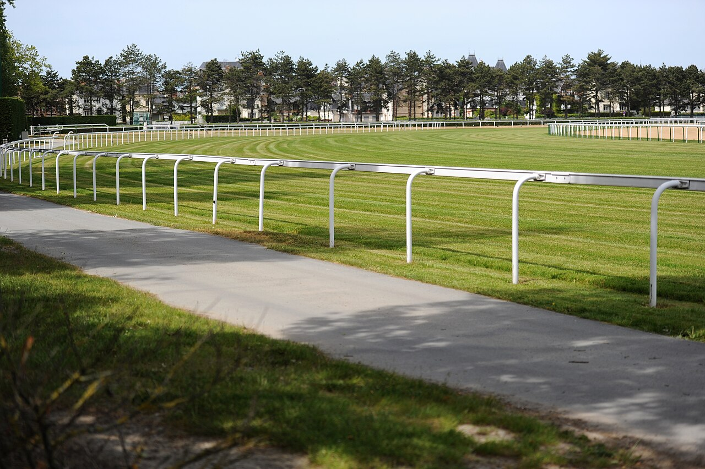

Al Aasy se retira a los nueve años con diez victorias de Grupo
Shadwell anunció la retirada de Al Aasy, hijo de Sea The Stars que alcanzó su techo en el Grand Prix de Deauville y cierra su carrera con un sexto puesto en la St Simon Stakes.

La despedida llegó tras la St Simon Stakes, un Grupo 3 en el que Al Aasy fue sexto el viernes. Fue su última carrera. Este mismo mes había ganado la Cumberland Lodge Stakes, otro Grupo 3, en Ascot.
El caballo bayo, hijo de Sea The Stars y Kitcara (por Shamardal), suma 34 salidas con 14 victorias, 6 segundos puestos y 3 terceros, y unas ganancias de 1.055.486 dólares. Diez de esos triunfos fueron en carreras de Grupo. Su mejor actuación fue el Grand Prix de Deauville, de Grupo 2, en agosto.
Nacido de la cría de Sunderland Holding, pasó por el Tattersalls October Yearling Sale de 2018 y salió de Mount Coote Stud hacia Shadwell Estate Company por 300.000 guineas. Desde entonces ganó al menos una carrera de stakes cada año, de los tres a los nueve.
Shadwell lo despidió en X con un mensaje: «Al Aasy, feliz retiro a una leyenda». Recordó que debutó en 2019 y que logró su primer Grupo 2 a los nueve años, en 2026. El comunicado habla de «13 victorias en carreras de stakes» y de «un fiel baluarte de los colores azul y blanco», y anuncia que disfrutará de su retiro en Shadwell.
Su preparador, William Haggas, también se despidió en X: «Feliz retiro al caballo de la cuadra que es una leyenda». Tras ocho temporadas en entrenamiento y 14 victorias, con 13 en stakes y 10 en Grupo, Al Aasy ha dado «muchos grandes días para recordar» al equipo de Somerville Lodge.
Por Martín Larrañeta